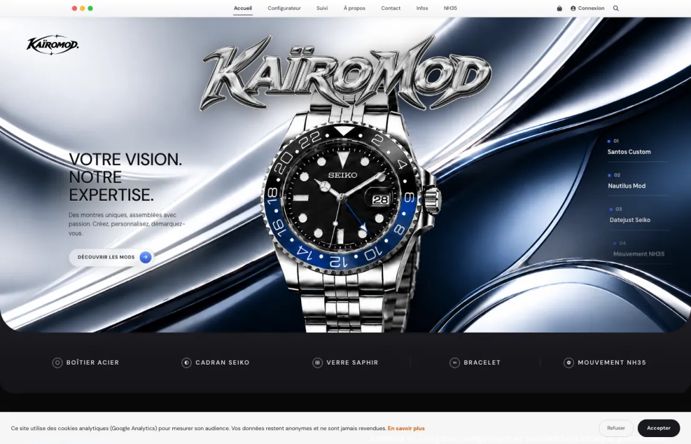
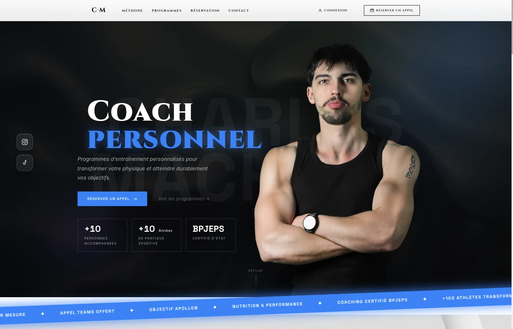
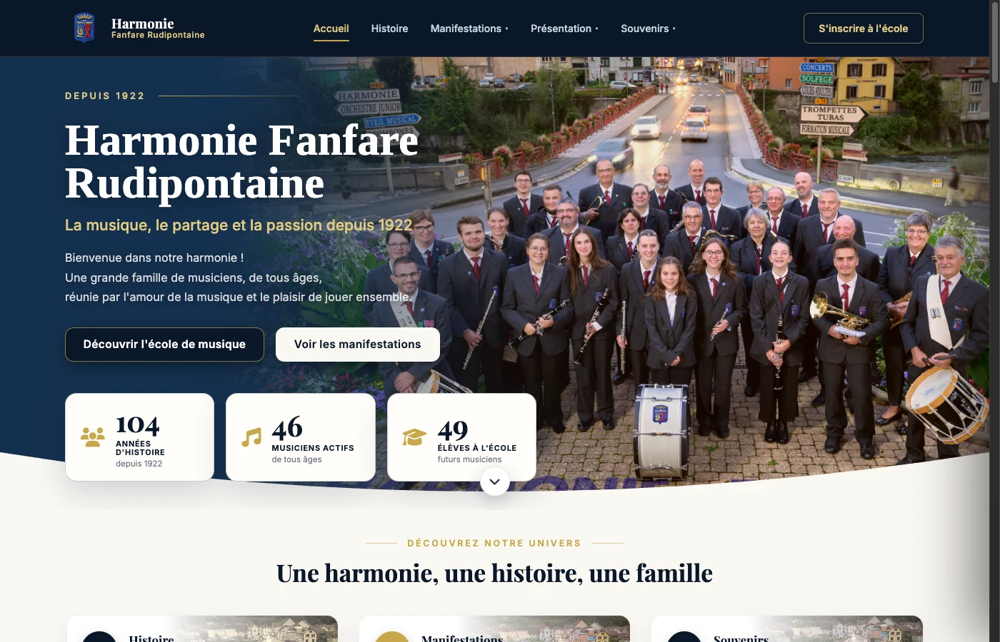

Développement SaaS
Applications web sur-mesure : authentification, bases de données, paiements, tableaux de bord — de l'idée au déploiement cloud scalable.
01 — À propos
Passionné d'informatique depuis toujours, j'aide particuliers et entreprises à transformer une idée en produit concret : une application SaaS qui tourne, un site qui convertit, une identité visuelle qui marque, ou tout simplement une machine qui refonctionne enfin comme elle devrait.
Mon approche tient en un mot : exigence. Du premier croquis à la dernière ligne de code, jusqu'à la dernière vis serrée sur un boîtier — chaque détail compte.
03 — Projets

Configurateur interactif pour personnaliser des montres Seiko Mod assemblées à la main : boîtier, cadran, bracelet, verre saphir, suivi de commande et espace client.
Voir le site
Site vitrine pour un coach certifié BPJEPS : programmes de remise en forme, réservation d'appel découverte, galerie de transformations et espace client.
Voir le site
Refonte du site d'une association musicale fondée en 1922 : présentation de l'orchestre, agenda des concerts, école de musique et historique du centenaire.
Voir le site04 — Process
On cadre le besoin réel, les objectifs et les contraintes techniques ou budgétaires.
Maquettes, direction artistique et expérience utilisateur, validées avant tout développement.
Code propre, performant et évolutif — ou montage & configuration matérielle rigoureuse.
Déploiement, formation à l'usage, puis maintenance et dépannage sur la durée.
Disponible pour de nouveaux projets
05 — Contact
SaaS, site web, identité visuelle ou PC en panne — écrivez-moi, je réponds rapidement.
gregjvdr@gmail.com